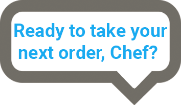

blanks space 1

Order #1
Now we’re cooking sailor! After all of ye preparations we finally have our grilled cheese in the pan! Immediately after you place the entire grilled cheese in the pan you should hear the bubble and sizzle of the food hitting the pan(!if you are not hearing that you may not have preheated your pan properly sailor). Once you’ve gotten ye grilled cheese cooking in the pan use the spatula to put some pressure on the grilled cheese while spreading it all around the pan to collect the burning fat from the butter you spread earlier..
Blanks Space 2
Tip #1
A fun lil fact for ye: According to most veteran grilled cheese connoisseurs the best grilled cheese in the world is Beecher’s Handmade Cheeses in New York City!
View Larger Map
Tip #2
By using the spatula to apply pressure to grilled cheese on your heated, oily pan you are increasing the amount of surface and pressure the grilled cheese is under while on the pan. This allows it to cook faster as more of the grilled cheese is being cooked at once as it will be flatter which increases its surface area which some experienced sailors will be able to recall from ye physics classes.
Blanks space 3
Reservations
By Kris Ash
Blanks space 4
